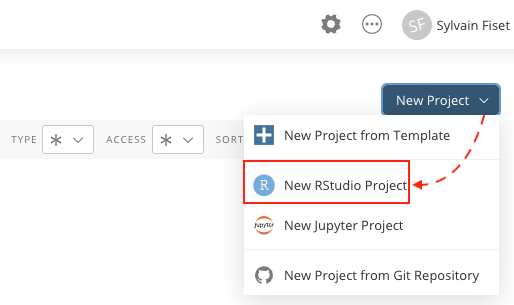

7 Posit Cloud
Dans ce chapitre, j’introduis l’application RStudio Cloud. RStudio Cloud est la version web de RStudio IDE. Elle permet :
- d’utiliser R et RStudio directement dans votre navigateur web et ce, sans avoir à télécharger les logiciels R et RStudio sur votre ordinateur
- de partager aisément des projets RStudio avec plusieurs utilisateurs
Si vous avez téléchargé avec succès les applications R et RStudio sur votre ordinateur (et quelles fonctionnent correctement) et que vous n’envisagez pas de partager vos projets d’analyse avec quelqu’un d’autre (ce qui arrive rarement, soit dit en passant), vous pouvez sauter la lecture de ce chapitre.
Bien que RStudio Cloud s’apparente à la version locale1 de RStudio IDE, les premiers pas avec RStudio Cloud peuvent s’avérer difficiles. Dans le présent chapitre, je désire soulever quelques éléments importants afin de maximiser l’expérience d’utilisation de RStudio Cloud.
7.1 Création d’un compte
La première étape consiste à créer un compte gratuit (Free) sur le site web de RStudio Cloud (voir Figure @ref(fig:signup)). Notez, par ailleurs, que l’utilisateur atteint très rapidement les limites d’utilisation du plan gratuit de RStudio Cloud. Dans l’optique où l’utilisateur (i) dépasse le nombre de projets ou d’espaces de travail admissibles, (ii) dépasse le nombre d’heures par projet disponibles, ou (iii) qu’il désire augmenter la mémoire RAM et la vitesse d’exécution des codes, le plan Premium de RStudio Cloud s’avère une alternative intéressante, mais relativement dispendieuse2.
7.2 Espaces de travail
RStudio Cloud possède la capacité de regrouper plusieurs projets RStudio à l’intérieur d’un même espace de travail. Dans RStudio Cloud, ces environnements se nomment Spaces. Cette caractéristique permet (1) de regrouper tous vos projets RStudio associés au même thème (ex: un cours universitaire, une formation, une étude scientifique, etc.) à l’intérieur d’un même environnement et/ou (2) de partager un espace de travail avec d’autres personnes, comme un professeur avec ses étudiants.
Afin d’atteindre ces objectifs, RStudio Cloud divise l’espace de travail en deux catégories d’espace :
- les espaces de travail individuels
- les espaces de travail partagés3.
7.2.1 Espace individuel
L’espace de travail individuel se trouve dans l’onglet Your Workspace sous l’en-tête Spaces à la gauche de RStudio Cloud (voir Figure @ref(fig:ws)). Par défaut, les projets RStudio qui sont créés à l’intérieur de cet espace de travail individuel ne sont disponibles et visibles qu’à l’utilisateur du compte. Cependant, il est possible de rendre disponibles les projets de cet espace individuel afin qu’ils soient consultés et copiés par d’autres utilisateurs de RStudio Cloud (si cela vous intéresse, veuillez cliquer ici).

Personnellement, j’utilise rarement l’espace de travail individuel. Je préfère regrouper mes projets RStudio à l’intérieur de thèmes spécifiques (cours, projets de recherche, etc.) à l’aide d’espace de travail partagé (voir ci-dessous). De plus, puisque l’utilité première de RStudio Cloud est de favoriser le travail collaboratif, je ne discute pas plus longuement de l’espace de travail individuel. Je considère qu’une gestion responsable des espaces partagés permet d’obtenir le même niveau de confidentialité que l’espace de travail individuel.
7.2.2 Espaces partagés
RStudio Cloud permet de regrouper et de partager avec d’autres utilisateurs des projets RStudio dans le même espace de travail. Les projets RStudio qui sont intégrés à l’intérieur d’un espace de travail partagé doivent obligatoirement avoir un thème commun. Par exemple, je peux regrouper les exercices d’un même cours dans un espace de travail partagé ou regrouper les projets associés à mes travaux de recherche sur une thématique spécifique. Bref, avant de créer un espace de travail partagé, il faut cibler le dénominateur commun aux projets qui y seront regroupés. Dans le cadre d’un cours, par exemple, un professeur peut créer un espace de travail partagé avec tous ces étudiants pour un exercice particulier. Cela lui permet d’avoir accès à tous les travaux effectués dans le cadre de cet exercice4.
À titre d’exemple, la Figure @ref(fig:spaces) montre — voir la colonne de gauche — que j’ai créé un espace de travail partagé (voir l’icone avec 3 personnes) du nom de Exercices. Si désiré, je pourrais créer un nouvel espace de travail partagé en cliquant sur + New Space. Personnellement, tous mes espaces de travail dans RStudio Cloud sont de nature partagée. Cette façon de faire me permet, si désiré, de rendre disponibles plusieurs projets à plusieurs personnes, et ce, très rapidement.

7.3 Projets
RStudio oblige l’utilisateur à créer un projet RStudio, ce qui, à mon avis, est une très bonne chose 5. À titre de rappel (voir Chapitre @ref(projetRStudio)), un projet RStudio permet de regrouper tous les fichiers (données, analyses, figures, etc.) liés à un projet d’analyse statistique.
7.3.1 Créer un nouveau projet
Pour créer un nouveau projet, il suffit de cliquer sur la flèche (∨) de l’onglet New Project (voir à droite de la Figure @ref(fig:spaces)) et, dans la bande déroulante, de sélectionner l’option New RStudio Project (voir Figure @ref(fig:newproject)). Pendant quelques secondes, le message Deploying Project apparaît et, ensuite, votre nouveau projet s’ouvre dans RStudio Cloud.

7.3.2 Renommer le nouveau projet
À l’ouverture d’un nouveau projet (voir Figure @ref(fig:untitled)), RStudio Cloud attribue le nom Untitled Project au nouveau projet. Le nom du projet est disponible tout au haut de l’écran et il est possible de voir dans quel espace de travail le projet est inséré. Dans mon exemple, l’expression Exercices / indique que le nouveau projet est inséré à l’intérieur de l’espace de travail partagé nommé Exercices.
Donc, à l’ouverture d’un nouveau projet, la première chose à faire consiste à renommer le projet. Il faut cliquer sur Untitled Project (en haut à gauche de la fenêtre) et inscrire le nouveau nom de votre projet (Figure @ref(fig:exercice2)). À titre de démonstration, j’ai créé un nouveau projet du nom de Exercice2.
7.3.3 Importer des fichiers dans un projet
Habituellement, l’analyste importe un ou des fichiers de données (.xlsx, .dat, .txt, .csv, etc.) dans RStudio pour ensuite l’analyser à l’aide d’un script R ou d’un script R Markdown. Avec la version locale de RStudio IDE, l’analyste n’a qu’à copier son fichier dans le répertoire qui contient son projet RStudio. Avec RStudio Cloud, l’approche est différente. À partir du projet RStudio, il faut importer le fichier de données dans l’espace cloud dédié à ce projet sur le serveur de RStudio.
Voici un exemple. Dans la fenêtre Files de RStudio, nous pouvons voir que le projet RStudio (project.Rproj) est inséré dans le dossier Cloud > Project (voir Figure @ref(fig:upload)).
- Nous pouvons importer un fichier de données dans ce dossier en cliquant sur l’onglet
Upload. - Une fenêtre s’ouvre et il faut simplement cliquer sur
Choisir le fichiersous l’en-têteFile to upload. Dans mon exemple, le fichier que je désire importé se nommeRatLives.csv6. Il est possible d’importer plusieurs fichiers simultanément. Ceux-ci, cependant, doivent être regroupés, au préalable, à l’intérieur d’un fichier .zip. - Après l’importation, le fichier (
RatLives.csv) est disponible dans le projet RStudio Cloud.
7.3.4 Examiner la liste des projets
Il est possible d’obtenir la liste de tous les projets d’un même espace de travail. Pour cela, il faut cliquer sur le nom de l’espace de travail que vous désirez consulter. Dans mon exemple, le nom de mon espace de travail est Exercices. Pour voir la liste des projets associés à cet espace de travail, deux choix s’offrent à moi :
- Je peux cliquer sur l’onglet
Exercices [Sylvain Fiset]dans la liste des espaces à la gauche de la fenêtre de RStudio Cloud (sous l’en-têteSpaces). - Je peux aussi cliquer sur
Exercicesdans le titreExercices / Exercice2de mon projet qui est déjà ouvert.
La Figure @ref(fig:liste) montre un exemple de la liste des projets disponibles pour mon espace de travail Exercices.

7.3.5 Exporter un projet RStudio Cloud
Lorsque la liste des projets d’un espace de travail de RStudio Cloud est affichée à l’écran, vous pouvez facilement exporter l’un des projets sur votre ordinateur et le partager. Il suffit de cliquer sur l’option Export, laquelle est située à la droite du nom du projet dans la liste (voir la Figure @ref(fig:liste)). Tous les fichiers associés à ce projet seront exportés. L’exportation d’un projet RStudio Cloud sert principalement deux objectifs :
- L’exportation permet de sauvegarder une copie de votre projet sur votre ordinateur.
- L’exportation facilite grandement le partage des projets RStudio entre les utilisateurs7.
Après avoir cliquer sur l’option Export, une première fenêtre s’ouvre et génère le dossier d’exportation du projet. Ensuite, une seconde fenêtre apparaît et il faut cliquer sur Download pour télécharger le dossier (voir la Figure @ref(fig:export)). Par défaut, le projet est téléchargé dans le répertoire (ou dossier) de téléchargement de votre ordinateur. Il conserve exactement la même structure que votre dossier dans RStudio Cloud. Vous pouvez donc l’ouvrir avec la version locale de RStudio IDE sur votre ordinateur et avoir accès à tous les fichiers. Prenez note que lors du téléchargement, le dossier de téléchargement se voit attribuer un nom arbitraire composé de 7 chiffres. Si vous téléchargez à plusieurs reprises le même projet, le nom à 7 chiffres demeure le même d’un téléchargement à l’autre.

7.3.6 Partager un projet dans RStudio Cloud
L’un des avantages de RStudio Cloud est la possibilité de partager des projets RStudio avec plusieurs utilisateurs sans avoir à télécharger le projet. Tous les utilisateurs ont accès au même projet via RStudio Cloud. Par exemple, les membres d’une même équipe de recherche peuvent contribuer sur un même projet d’analyse statistique ou un étudiant peut partager son projet avec son professeur.
Le partage d’un projet RStudio Cloud s’effectue à partir de l’espace de travail partagé (dans Spaces) dans lequel vous avez créé (ou déplacé) votre projet. Afin de partager votre espace de travail partagé, vous devez ajouter des membres. Sur la page d’ouverture de RStudio Cloud, cliquez sur le nom de l’espace de travail que vous désirez partager. Au haut de l’écran, cliquez sur Members. La liste des membres de l’environnement de travail sera affichée (voir Figure @ref(fig:members)). Par la suite, cliquez sur l’option Add Member pour inviter de nouveaux membres. Lors de l’invitation, vous devrez fournir une adresse courriel et préciser le rôle du nouveau membre (Admin, Moderator, Contributor, Viewer). Par défaut, le choix Contributor est offert et, à moins de raisons valables, ce choix demeure la meilleure option. De plus, en tant qu’administrateur de cet environnement de travail, vous pouvez déterminer les privilèges que vous désirez accorder à chaque membre que vous invitez (voir l’encadré pointillé à la droite de la Figure @ref(fig:members)).
7.3.6.1 Accessibilité
Lors du partage d’un projet, vous pouvez restreindre l’accessibilité de votre projet. Ainsi, même si vous partagez un espace de travail avec 20 autres utilisateurs, vous pouvez limiter l’accès de votre projet aux administrateurs et aux modérateurs de l’environnement de travail. Pour vous assurez que cette option soit activée pour un projet en particulier, ouvrez le projet et cliquez sur l’icone de la petite roue située à la gauche de votre nom en haut à droite dans le fenêtre web de RStudio Cloud (voir Figure @ref(fig:access)). Par la suite, sélectionnez Access et assurez-vous que l’option You* soit sélectionnée dans la bande déroulante. Limiter l’accessibilité à un projet est particulièrement important dans le cadre d’un cours.

7.3.7 Effacer un projet
Si vous désirez effacer un projet de votre compte RStudio Cloud, deux possibilités s’offrent à vous :
- Dans la liste des projets associés à un espace de travail spécifique, cliquez sur l’option
Delete. L’optionDeleteest située à la droite du nom du projet dans la liste des projets (voir la Figure @ref(fig:liste)). - Lorsque le projet est déjà ouvert dans RStudio Cloud, vous pouvez cliquer sur l’icone avec les trois petits points à l’horizontal situé près de votre nom en haut à droite de la page web de RStudio Cloud. Ensuite, sélectionnez l’option
Delete Projectdans la bande déroulante (voir la Figure @ref(fig:delete)).

7.4 Options de RStudio Cloud
Tout comme la version locale de RStudio IDE, tel que montré au Chapitre @ref(options), il est possible de modifier les options de RStudio Cloud. Prenez note, cependant, qu’il faut modifier les options pour chacun des projets que vous créez — ce qui n’est pas le cas avec la version locale de RStudio. Cela est nécessaire puisque pour chaque projet, RStudio Cloud produit un espace de travail dans lequel les projets sont tous indépendants les uns des autres.
7.5 Consulter votre compte
Vous pouvez consulter les paramètres d’utilisation de votre compte RStudio Cloud en cliquant sur votre nom. Vous y verrez quelques statistiques, comme le nombre de projets et le nombre d’heures d’utilisation pour un mois (voir la Figure @ref(fig:account)). Cela est particulièrement important si votre compte d’utilisateur est gratuit.

7.6 Quitter RStudio Cloud
Pour quitter RStudio Cloud, n’oubliez pas de cliquez l’option Log Out après avoir cliquer sur votre nom (voir la Figure @ref(fig:account)).
L’expression
version localedésigne la version de RStudio téléchargée et installée sur un ordinateur (et non dans le nuage, comme RStudio Cloud).↩︎Cela est d’autant plus vrai que la version locale de RStudio IDE est, elle, disponible gratuitement.↩︎
Les espaces de travail individuels sont illustrés par une icone avec une personne et les espaces de travail partagés sont illustrés par des icones avec trois personnes.↩︎
RStudio Cloud a d’ailleurs été conçu, en partie, pour répondre à ce besoin lors de l’enseignement de R et de RStudio.↩︎
Si vous n’êtes pas familier avec les projets RStudio, je vous invite à consulter le chapitre @ref(projetRStudio).↩︎
Ce fichier provient des fichiers de données qui accompagnent le livre de John Kruschke, Doing Bayesian Data Analysis.↩︎
Si vous ne désirez pas utiliser la fonction
sharede RStudio Cloud.↩︎